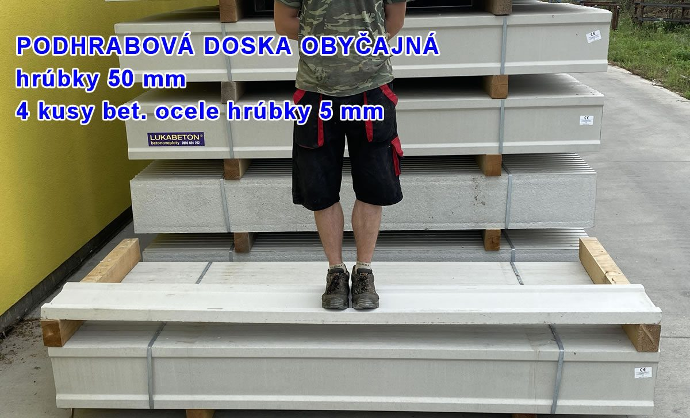

Plot, ktorý stojí na kvalite.
Certifikované betónové oplotenie LUKAPLOT® pre domy, firmy aj verejné priestory. Od návrhu riešenia cez dovoz až po odbornú montáž.
Oplotenie je investícia na dlhé roky.
LUKABETON vyrába značkové betónové oplotenie LUKAPLOT®. Dôraz kladie na pevnosť, nízku nasiakavosť a kontrolovanú výrobu — vlastnosti, ktoré rozhodujú o životnosti plota.
Plot podľa vášho priestoru.
Imitácia starej tehly
Farebná dekoratívna strana, z druhej strany hladký povrch.
Pozrieť variant a ceny →Zosilnené riešenie
Variant pre situácie, kde sú rozhodujúce vyššie nároky na konštrukciu.
Konzultovať riešenie →
Kvalita, ktorú možno overiť.
Certifikovaný systém
Prvky na ploty spĺňajú požiadavky normy STN EN 12839; kvalitu sleduje TSÚS.
Pevnosť a odolnosť
Výrobca uvádza skúšky pevnosti, nasiakavosti a pravidelné inšpekčné kontroly.
Skúsenosti od roku 1996
Výroba betónových plotov začala ako živnosť, od roku 2007 pokračuje LUKABETON s.r.o.
Kompletné riešenie
Návrh, dovoz, vykládka a montáž pomáhajú udržať kvalitu aj pri realizácii.
Správny plot potrebuje aj správnu montáž.
Výsledok ovplyvňuje založenie stĺpikov, presnosť osadenia aj podmienky terénu. Preto sa oplatí riešenie konzultovať ešte pred objednávkou.
Poďme naceniť váš plot.
Pošlite základné údaje. Pre presnejšie nacenenie si pripravte približnú dĺžku, požadovanú výšku a miesto realizácie.
+421 917 148 209+421 907 725 271lukabeton@lukabeton.sk